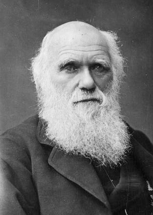

Figure 1. Charles Darwin himself
Facts
-
1809-1882
-
England
-
Biologist, naturalist, geologist
Achievements
-
Father of evolution theory, one of the most influential figures in human history.
-
First published 1859 in this book On the "Origin of Species".
-
Natural selection as nature’s version of selective breeding (artificial selection).
-
Laid foundation for Psychology as a Science.
-
-
His book "The Expression of the Emotions in Man and Animals" illustrates how evolutionary thinking can contribute to a scientific understanding of human behavior.